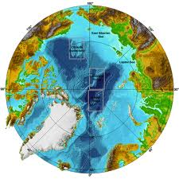

|  |
NorthLands Ver 1.020 Dec 2013 |
Based on RebeLand 2.0 which was designed by Claudio Cioffi-Revilla and implemented by Eric 'Siggy' Scott and Ahmed ElMolla.
NorthLands is a discrete-time, agent-based model of the Circumboreal and Arctic regions of the Earth for the study of the impact of climate change on the regions.
Version 1.0: 20 Dec 2013